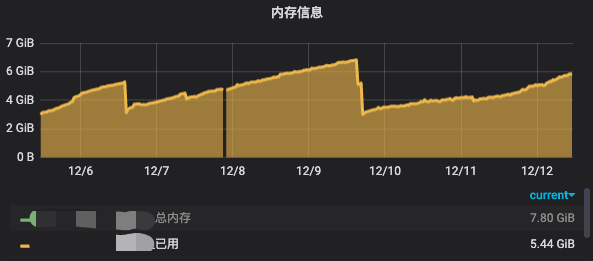
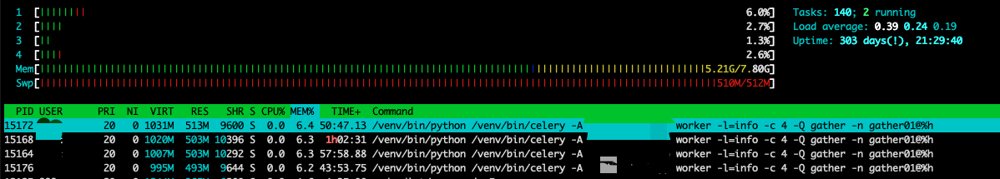

概述
记录下内存泄露的产生原因，以及如何解决的。
发现内存泄露
- 监控告警系统(Prometheus + Grafana)检测到某台服务器的内存大于80%，给我推送了微信告警信息。

- 于是我登上服务器去看了下进程占用情况，发现celery worker内存占用很高。猜想大概是和celery有关

产生内存泄露的几种原因假设
- celery 本身内存泄露
- celery worker 代码不规范导致的内存泄露
- 引入的第三方包有内存泄露
解决办法
针对第一个问题 去Google了一下，还真是一个普遍性的问题呢！看看这个 issue，好巧我用的就是celery==4.2.1。于是升级了celery版本，过了半天开始看监控，发现内存泄露的速率只是减缓了，并没有完全解决，现在大概是按照每天1GB的速率泄露。
既然这样那可能是代码的写法问题了。代码大概如下：
1 |
|
使用 memory-profiler 这个工具进行debug后，发现内存泄露的地方有2点，
resp = session.get(url, verify=False)ret['meta_description'] = get_meta_description2(text)
难道是requests这个包的锅？网上搜了下，发现还真的是这个问题。。。并且至今也没有解决，(https://github.com/psf/requests/issues/4601)，看了下源码大概是底层 socket 的问题。
第二个问题 get_meta_description 这个函数中用到了 lxml 这个包，也有内存泄露的问题。这可真让人头秃。。。
于是修改了实现方式，改用正则匹配。
代码中大量地方都引入了 requests 这个包，换它是不可能换的，最终解决办法是设置 celery 的配置参数 app.conf.worker_max_tasks_per_child = 40 https://docs.celeryproject.org/en/latest/userguide/workers.html#max-tasks-per-child-setting
这个表示每个worker的进程 在执行 40 次任务后，主动销毁，之后会起一个新的。主要解决一些资源释放的问题。可以有效的避免内存泄露。只针对 prefork 有效。
深入研究
重启进程不是根本的解决办法啊。想看看有没有什么requests的替代品，那我们就来看看python中常规的网络请求库有没有内存泄露这个问题。
测试环境为 python 3.7.5，测试脚本如下1
2
3
4
5
6
7
8
9
10
11
12
13
14
15
16
17
18
19
20
21
22
23
24
25
26
27
28
29
30
31
32
33
34
35
36
37
38
39
40
41
42
43
44
45
46
47import ssl
import urllib.request
from time import time
import certifi
import requests
import urllib3
from memory_profiler import profile
def test_requests(url):
resp = requests.get(url)
context = ssl.create_default_context()
def test_urllib(url):
with urllib.request.urlopen(url, context=context) as f:
resp = f.read().decode()
def test_urllib3(url):
http = urllib3.PoolManager(
cert_reqs='CERT_REQUIRED',
ca_certs=certifi.where())
r = http.request('GET', url)
def main():
url = 'https://httpbin.org/anything?i={}'
t = time()
for i in range(100):
# if time() > t + 60:
# break
test_urllib(url.format(i))
# test_urllib3(url.format(i))
# test_requests(url.format(i))
if __name__ == '__main__':
# objgraph.show_growth()
main()
# objgraph.show_growth()
部分结果如下1
2
3
4
5Line # Mem usage Increment Line Contents
================================================
11 67.30469 MiB 67.30469 MiB @profile(precision=5)
12 def test_requests(url):
13 67.66016 MiB 0.35547 MiB resp = requests.get(url)
测试了 http 和 https 两种URL，几乎所有的网络请求库都有内存泄露的问题。。。我佛了。应该socket底层出问题了吧。
| package | version | http | https |
|---|---|---|---|
| urllib | - | Y | Y |
| urllib3 | 1.25.7 | - 偶尔发生 | Y |
| requests | 2.22.0 | Y | Y |
总结
- 批量+长时间的网络请求时，要对服务器的内存有点数。需要实现重启机制。
- 没理解python内存回收机制的话，不要写magic method
__del__，很容易写出内存泄露的代码。
相关链接
- urllib 内存泄露的讨论 https://bugs.python.org/issue38251
- requests https://github.com/psf/requests/issues/4601